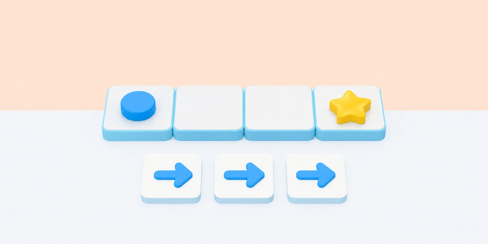

Pensament Computacional
Tria una activitat per treballar instruccions, patrons, decisions i dades amb el cos i materials d’aula.

Idea clau. Una activitat desendollada té un objectiu observable i un moment perquè l’alumnat explique com ha resolt el repte. El joc és el context; el raonament és l’aprenentatge.
El Robot Humà i el Llenguatge Precís
Una persona interpreta el robot sobre una graella, i una altra programa un recorregut amb instruccions precises i verificables.
Dibuix per Píxels i Imatges Binàries
Com 'veu' i guarda un ordinador un dibuix? L'alumnat codifica i descodifica imatges senzilles en quadrícules utilitzant només els valors 0 (blanc) i 1 (negre).
Xarxa d'Ordenació al Terra (Sorting Networks)
Dibuixem una xarxa de línies amb guix al pati. Sis alumnes amb números desordenats avancen per les línies; en cada encreuament es comparen de dos en dos i el més petit sempre va cap a l'esquerra.
El Laberint d'Instruccions i Detecció d'Errors
Sobre una graella gegant al terra amb fitxes de cartolina, els alumnes col·loquen targetes de fletxes per planificar un camí abans d'executar-lo. Quan troben un obstacle, aprenen a aïllar l'ordre equivocada.
El joc dels condicionals: si... llavors... si no...
Practiqueu les decisions amb targetes inventades i representeu què passa quan una condició és certa o falsa.
Missatges Secrets i Xifratge Cèsar
Construcció d'una roda de xifratge de dos cercles concèntrics per comprendre com es protegeix la informació a Internet desplaçant les lletres de l'alfabet un nombre fix de posicions.
La Coreografia dels Bucles
Repetiu una seqüència de moviments i busqueu la manera més clara d'explicar-la amb poques instruccions.
Detectius de Patrons i Repeticions
Observeu seqüències de formes i sons, expliqueu la regla i predigueu quin element ve després.
Receptes amb Instruccions de Robot
Descomposeu una tasca quotidiana en instruccions precises i proveu què passa si en canvieu l'ordre.
El Museu de les Dades
Recolliu dades inventades, trieu com classificar-les i representeu-les amb una regla clara.